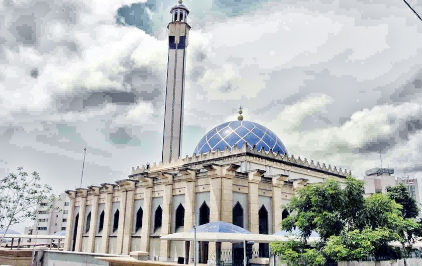

Tourism Area
Basilica of Our Lady of Peace in Yamoussoukro
The Basilica of Our Lady of Peace in Yamoussoukro is the largest Catholic religious building in the world. Its appearance is reminiscent of St. Peter's Basilica in Rome. Located in Yamoussoukro, the capital of Côte d'Ivoire, its location was chosen by the country's first president, Félix Houphouët-Boigny, in 1983. The Guinness Book of Records recognized it in 1989 as the world's largest Christian religious edifice. The basilica is still today a fervent place of the Catholic faith in Africa.
To know more about it
The peaceful bay of Monogaga
Monogaga is a fishing village located on the oceanfront about twenty kilometres from the tourist town of San Pedro. The name of this village was sung by the famous and talented artist Meiway for its beautiful and charming beach that leaves no one indifferent. The village of Monogaga owes its fame and notoriety to this calm and peaceful bay.
To know more about itGreat Mosque of the Plateau.
 To know more about itMount Nimba Integral Nature Reserve
Mount Nimba Strict Nature Reserve is a nature reserve located on the borders of Guinea, Liberia and Ivory Coast. It is classified since 1981 as a biosphere reserve and UNESCO World Heritage Site. The reserve is located on Mount Nimba which dominates the surrounding savannah and whose slopes are covered with dense forest. This forest contains a particularly rich flora and fauna, with endemic species such as the viviparous toad or chimpanzees that use stones as tools. The nearest main towns and villages are: Bossou, N'Zoo, Doromou.
To know more about it